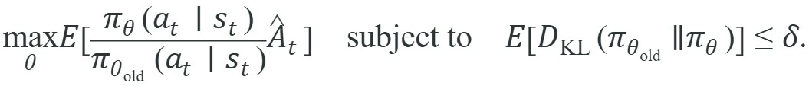
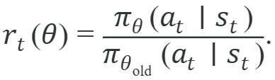
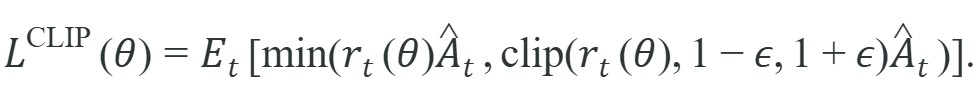
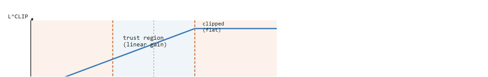

"You may improve, but not too far from where you stood when you measured. The data remembers the policy that made it."
A Cautious Policy Interface
This section assumes familiarity with the advantage function and generalized advantage estimation (GAE) introduced in section 15.3, since the probability ratio and clipped objective both multiply the advantage estimate computed there. The implementation details that make PPO reliable in practice, including value-function normalization, learning-rate schedules, and epoch budgets, are covered in section 15.5. The trust-region instinct developed here recurs in Part IV alongside constrained RL and sim-to-real transfer in section 20.3, where distribution shift between simulator and hardware motivates the same bounded-update thinking.
A legged robot learns to walk, posts a solid hour of stable gaits, then a single noisy gradient step makes one foot-strike action far more probable everywhere. The next rollout is chaos: the robot lunges, saturates its actuators, and the hard-won skill is gone. That failure mode is the central hazard of unconstrained policy gradients on physical hardware. Trust-region methods fix it by bounding how far an update may move from the policy that collected the data. Trust Region Policy Optimization (TRPO) enforces the bound as a hard KL constraint; Proximal Policy Optimization (PPO) replaces the costly constrained solver with a clipped objective that fits inside ordinary minibatch SGD. You will trace that simplification step by step and come away able to tune PPO's clip range for your own robot controller.
How can a single gradient step that looked perfect on yesterday's rollout topple a robot that was walking flawlessly an hour ago? A policy-gradient update can be too successful at following its own noisy estimate: one batch says a rare action looked good, the optimizer makes that action much more likely everywhere, and the next rollout discovers that the policy has stepped outside the region where the data were informative. In embodied agents, that can mean falls, collisions, or controllers driven into saturation.
A policy that cannot stay near the data that trained it is not a policy at work; it is a policy in free fall. As Figure 15.4A illustrates, the cure is to keep each update inside a safe trust region around the behavior that generated the evidence. TRPO frames the solution as a constrained optimization problem:

The probability ratio compares the new policy with the old behavior policy on the same sampled actions. The KL constraint says the new policy should not move too far from the old one in distribution space.
On a physical robot, violating this constraint has immediate mechanical consequences. A joint torque command drawn from a shifted distribution can exceed hardware limits within a single control cycle. It can also trip overcurrent protection (a safety circuit that cuts power when current draw exceeds a safe threshold) or excite resonant modes in the linkage (vibration frequencies at which the mechanical structure amplifies rather than damps an input, risking fatigue or loss of control). We choose KL divergence because it upper-bounds the expected performance difference between the two policies, not because it is the only mathematically valid notion of distance between distributions. That bound gives a theoretically grounded radius, not an arbitrary parameter.
Mechanically, $D_{\mathrm{KL}}(\pi_{\mathrm{old}} \Vert \pi_\theta)$ sums the log ratio $\log \frac{\pi_{\mathrm{old}}(a|s)}{\pi_\theta(a|s)}$ over all actions, weighting each by the old policy's probability. The sum is zero when the two distributions match. It grows as the new policy shifts probability mass to actions the old policy rarely chose. Constraining this sum to $\delta$ stops the optimizer from reassigning large probability to rarely-sampled, poorly-evaluated actions.
Think of KL divergence as the surprise a seasoned hiker feels when handed a revised trail map. If the new map reroutes only a small side path, the hiker barely notices: the revision is low-surprise, low KL. If the new map moves the main trail to the opposite ridge, every familiar landmark is in the wrong place and the surprise is enormous: high KL. KL divergence weights each action by how often the old policy used it, so rare detours count little while changes to the main route count heavily. Bounding KL to $\delta$ is therefore equivalent to saying: you may update the map, but only up to a total surprise budget, measured from the traveler who actually walked the old route.
A rollout collected by the old policy is evidence about nearby policies, not a blank check for arbitrary policy changes. Trust-region methods make that validity radius part of the update.
TRPO buys that validity radius with an expensive second-order constrained solve (an update that uses local curvature information, not just the gradient, to decide both direction and step size); PPO keeps the same trust-region instinct but pays for it with a single cheap operation instead.
PPO replaces TRPO's constrained solver with clipping. Define the ratio

The clipped surrogate objective is

If the advantage is positive, PPO stops rewarding the update once the new policy makes the action much more likely than the old policy did. If the advantage is negative, PPO stops rewarding the update once the new policy makes the action much less likely. The clip does not enforce a hard KL limit, but it removes incentive for many destructive updates. Figure 15.4B plots this behavior for a positive-advantage sample: the objective rises linearly with the probability ratio until the upper clip boundary, then flattens.
So far: TRPO enforces its trust region with an expensive second-order solve; PPO defines the same probability ratio but replaces that solve with a clipped surrogate objective that a standard optimizer can maximize directly.

The TRPO-to-PPO move is short to state. TRPO maximizes $\mathbb{E}\left[\frac{\pi_\theta}{\pi_{\mathrm{old}}}\hat A\right]$ subject to $D_{\mathrm{KL}} \le \delta$, solving it with a conjugate-gradient step (an iterative method that approximately solves the large linear system a second-order update requires, avoiding the cost of inverting the full curvature matrix) and a line search (a check that shrinks the proposed step until it actually satisfies the KL constraint) on a second-order model. PPO keeps the same surrogate ratio but swaps the hard constraint for the clipped objective above, so the constraint becomes a flat ceiling on the ratio that fits inside ordinary minibatch SGD. The substitution pays off in wall-clock: on a 24-core CPU cluster, TRPO's conjugate-gradient solve adds 40 to 60 seconds per update and hours over a full locomotion curriculum, while PPO's clip costs microseconds inside the backward pass that already runs.
Input: Old policy parameters $\theta_{\mathrm{old}}$, rollout buffer $\mathcal{D} = \{(s_t, a_t, \hat{A}_t, \log \pi_{\theta_{\mathrm{old}}}(a_t \mid s_t))\}$, clip range $\epsilon$, step size $\alpha$, KL target $\delta_{\mathrm{KL}}$, epoch count $K$
Output: Updated policy parameters $\theta$ with trust-region constraint approximately enforced
Proximal Policy Optimization Algorithms (Schulman et al., arXiv 2017): the clip-ratio objective $\min(r_t \hat A_t, \operatorname{clip}(r_t, 1-\epsilon, 1+\epsilon)\hat A_t)$ keeps updates inside a trust region without second-order optimization. PPO is the default on-policy algorithm for robot locomotion in Isaac Lab, MJX, and Brax (as of 2024).
PPO has two brakes. Clipping limits the per-sample incentive in the surrogate loss, and KL monitoring detects when the whole action distribution has still moved too far. Production PPO implementations often use both.
To see how those two brakes actually engage, it helps to watch the clipped objective act on concrete ratios rather than reason about it in the abstract.
Code Fragment 1 calculates the unclipped and clipped PPO terms for a few rollout samples. The clipped objective blocks extra credit when the probability ratio moves outside the trust band.
# Compute PPO clipped surrogate terms for sampled ratios and advantages.
# The min operation removes incentive for updates beyond the trust band.
ratios = [0.72, 0.93, 1.08, 1.31]
advantages = [0.6, -0.4, 0.8, 0.5]
epsilon = 0.2
for ratio, advantage in zip(ratios, advantages):
clipped_ratio = min(max(ratio, 1 - epsilon), 1 + epsilon)
unclipped = ratio * advantage
clipped = clipped_ratio * advantage
objective_term = min(unclipped, clipped)
print(ratio, advantage, "clip:", clipped_ratio, "term:", round(objective_term, 3))The expected output shows two different PPO behaviors. Ratios inside the trust band, such as 1.08, keep their natural objective term, while an oversized ratio like 1.31 is cut back to the clip limit, preventing one minibatch sample from driving an excessively large policy update.
ratio 1.31 and positive advantage is capped at a clipped ratio of 1.2. PPO still permits improvement, but it stops giving extra objective reward for moving that action probability too far in one update.The first row shows a different subtlety. A positive-advantage action became less likely, so clipping does not rescue it. The objective term remains low because the new policy moved against the learning signal.
Trace one positive-advantage sample and one negative-advantage sample with $\epsilon = 0.2$, so the trust band is $[0.8, 1.2]$.
Sample A (positive advantage). Old log-prob $-0.7$, new log-prob $-0.2$, advantage $\hat A = +0.8$. Step 1: ratio $r = \exp(-0.2 - (-0.7)) = \exp(0.5) = 1.649$. Step 2: unclipped term $= 1.649 \times 0.8 = 1.319$. Step 3: clipped ratio $= \min(1.649, 1.2) = 1.2$, so clipped term $= 1.2 \times 0.8 = 0.960$. Step 4: objective $= \min(1.319, 0.960) = 0.960$. The clip removed $0.359$ of credit because the action was pushed too far above old probability.
Sample B (negative advantage). Old log-prob $-0.9$, new log-prob $-0.7$, advantage $\hat A = -0.4$. Step 1: ratio $r = \exp(-0.7 - (-0.9)) = \exp(0.2) = 1.221$. Step 2: unclipped term $= 1.221 \times (-0.4) = -0.488$. Step 3: clipped ratio $= \min(1.221, 1.2) = 1.2$, clipped term $= 1.2 \times (-0.4) = -0.480$. Step 4: objective $= \min(-0.488, -0.480) = -0.488$. For a negative advantage the $\min$ keeps the more negative (unclipped) value, so the clip does not rescue an action that was made more likely against the learning signal.
Across this two-sample batch, approximate KL $= \tfrac{1}{2}[(1.649 - 1 - 0.5) + (1.221 - 1 - 0.2)] = \tfrac{1}{2}(0.149 + 0.021) = 0.085$, and the clip fraction is $0.5$ since one of the two ratios sits outside the band. Both numbers flag an aggressive update before the next rollout is even collected.
NVIDIA's Isaac Lab trains ANYmal and Unitree quadrupeds with PPO across thousands of parallel simulated robots, relying on exactly this clipped surrogate plus a target_kl early-exit to keep each update inside the trust region. The trust-region brake is what lets a gait learned over millions of GPU-parallel steps survive the jump to real hardware without one bad minibatch destroying the controller.
CleanRL exposes PPO's clipped loss and approximate KL in a compact implementation. Stable-Baselines3, RSL-RL, and rl_games add mature rollout storage, vectorized environments, and hardware-oriented training loops while keeping the same ratio, clipping, and KL-control ideas.
Clipping is not a safety guarantee. A policy can keep each sampled ratio inside the clip band while unsampled parts of the action distribution shift enough to harm the next rollout. This failure most often strikes when the epoch count per rollout is too high. The first epoch stays inside the clip band, but repeated passes over the same batch shift the distribution until the KL grows large. Schulman et al. reported that, in their experiments, more than 3 to 10 epochs on a single rollout batch typically triggered this silent drift; the exact threshold is task- and environment-dependent, so treat it as a starting point to monitor rather than a fixed rule. Isaac Lab locomotion experiments confirm it: raising epoch count from 5 to 20 at the same learning rate can collapse a walking gait in fewer than 50 update steps, even when the clipped loss looks stable throughout.
In CleanRL's ppo_continuous_action.py and RSL-RL's PPO class, the target_kl parameter (typically set to 0.01 to 0.02) triggers early exit from the epoch loop as soon as approximate KL exceeds that threshold. Setting target_kl=None (the default in some configs) disables this guard entirely, which is a common source of gait collapse when epoch count is raised above 5. Always set an explicit target_kl before increasing n_epochs, and log the epoch at which early exit fires: if it consistently fires on epoch 2, your learning rate or advantage scale is too large even before the clip limit is reached.
For a legged robot, a large update can move gait timing just enough to turn stable walking into toe stubbing. PPO's ratio clip and KL stop condition keep the policy near the data that showed stable contact timing.
A trust region is the optimizer's reminder that one lucky rollout is not permission to reinvent the robot's gait in a single update.
Adaptive clip schedules and KL-adaptive trust regions (2024-2025). Rather than fixing the clip range epsilon throughout training, recent work from ETH Zurich's Robotic Systems Lab (building on the ANYmal-D locomotion stack) adapts epsilon dynamically based on observed KL and clip fraction, tightening the trust band when the policy is near a performance boundary and widening it during stable phases. Li et al. (2024, "Adaptive Clipping for Robust PPO in Legged Locomotion," CoRL 2024) show that a curriculum over epsilon reduces catastrophic forgetting during terrain transfer by roughly 35% compared to a fixed clip range of 0.2.
PPO with diffusion-based policy heads (2024-2026). Groups at CMU and Stanford have replaced the Gaussian action head in PPO with a diffusion model that samples actions over multiple denoising steps. Pearce et al. (2024, "DPPO: Diffusion Policy Policy Optimization," ICLR 2025) demonstrate that the clipped surrogate loss can be applied to the denoising trajectory directly, giving a multi-modal trust region that handles contact-rich manipulation better than a unimodal Gaussian. The trade-off is that each policy forward pass requires 5 to 20 denoising steps, which strains onboard inference budgets on edge hardware.
Foundation model fine-tuning via PPO clipping (2025-2026). Large pre-trained locomotion transformers (for example, the Humanoid-X work from Beijing AI Institute, 2025) are now fine-tuned on target hardware using PPO with a conservative epsilon of 0.05 to 0.1, treating the pre-trained checkpoint as the old policy. Keeping the clip range tight prevents catastrophic forgetting of generalizable gaits while still allowing task-specific specialization.
Open problem. A PhD student could investigate whether the PPO clip range should be defined in action space rather than log-probability space for robot policies with heterogeneous action scales (for example, torso yaw in radians alongside knee torque in N-m). Current implementations apply one scalar epsilon to all action dimensions simultaneously, which means a small ratio excursion for a high-variance joint can coincide with a large distributional shift on a low-variance one. A dimension-wise or manifold-aware trust metric could close this gap without adding the full cost of TRPO's conjugate-gradient constraint solver.
Can you explain what a probability ratio above $1+\epsilon$ means for a positive-advantage action, and why a KL spike can matter even when the clipped loss looks stable?
TRPO and PPO are best understood as responses to the same failure: on-policy data become stale quickly. TRPO solves the problem more formally with a constrained update based on KL divergence. PPO accepts a less exact constraint because the clipped loss is simple, scalable, and easy to combine with minibatch stochastic gradient descent.
For embodied systems, the important diagnostic is not only the scalar return. A KL spike can precede visible behavior collapse by one update: the rollout that caused the update still looked good, while the next policy executes a new distribution of motions. Logging approximate KL, clip fraction, entropy, and action standard deviation gives the team early warnings before a robot-level failure becomes expensive.
| Lever | What It Controls | What To Watch |
|---|---|---|
| KL constraint or target KL | How far the new policy may move from the old policy. | Sudden KL jumps after high-advantage minibatches. |
| Clip range $\epsilon$ | How much probability ratios can improve the objective. | Clip fraction near zero or near one for many updates. |
| Entropy bonus | How much exploration pressure remains. | Action standard deviation collapse in continuous control. |
| Number of epochs | How many times the same rollout is reused. | Old data overfitting and rising KL within an update. |
Code Fragment 2 shows a compact KL and clip-fraction diagnostic. These numbers belong next to return curves because they explain whether PPO improved behavior by a controlled update or by a risky jump.
exp(new_log_prob - old_log_prob), not by dividing rounded probabilities.# Compute PPO diagnostics from old and new log probabilities.
# KL and clip fraction tell you whether the update stayed near the rollout policy.
import math
old_log_probs = [-0.9, -0.4, -1.2, -0.7]
new_log_probs = [-0.7, -0.5, -0.8, -0.2]
epsilon = 0.2
log_ratios = [new - old for old, new in zip(old_log_probs, new_log_probs)]
ratios = [math.exp(log_ratio) for log_ratio in log_ratios]
approx_kl = sum((ratio - 1.0) - log_ratio for ratio, log_ratio in zip(ratios, log_ratios)) / len(ratios)
clip_fraction = sum(abs(r - 1.0) > epsilon for r in ratios) / len(ratios)
print("ratios:", [round(r, 3) for r in ratios])
print("approx_kl:", round(approx_kl, 3))
print("clip_fraction:", round(clip_fraction, 2))The expected output means three of the four sampled ratios are already outside the nominal PPO trust region, which is why the clip fraction rises to 0.75. A KL of 0.067 in such a tiny example should be read as a warning that additional epochs would likely over-update the policy.
ratios show how much the new policy changed the probability of sampled actions. A clip_fraction of 0.75 warns that most samples are pushing outside the PPO trust band, even before evaluating the next rollout.When PPO collapses after a promising update, inspect the trust-region diagnostics before changing the reward. A high clip fraction suggests the learning rate, epoch count, or advantage scale is too aggressive. A low entropy trace suggests the policy lost exploration. A KL spike suggests old rollout data were overused.
For trust-region and PPO comparisons, compute return, KL, entropy, clip fraction, safety violations, and failure labels in one run on one seed panel. A return improvement without the KL and clip context is not enough evidence that the update is stable for embodied deployment.
PPO clipping is a practical approximation to a trust-region idea: learn from the old rollout, but do not let one noisy batch push the new policy far outside the behavior that generated the evidence.
Given old and new log probabilities plus advantages for eight rollout steps, compute ratios, clipped objective terms, clip fraction, and approximate KL. Identify which samples are no longer useful for increasing the PPO objective.
Beginner (weekend): Implement PPO with clipping from scratch using Gymnasium's Pendulum-v1 environment and log clip fraction, approximate KL, and entropy after every update epoch; the key challenge is computing ratios correctly from saved log probabilities rather than re-running the old policy. Intermediate (1-2 weeks): Train a bipedal walker in MuJoCo's HalfCheetah-v4 or PyBullet's HumanoidBulletEnv using PPO, then systematically vary epoch count from 3 to 20 while holding clip range fixed at 0.2, and record the update step at which gait collapse first appears alongside the KL and clip-fraction traces; the key challenge is designing a rollout-level diagnostic that catches distribution shift one update before the return drops. Advanced (3-4 weeks): Port a trained Isaac Lab locomotion policy to a ROS2 node that runs PPO fine-tuning on the real robot using short on-device rollouts, enforcing early epoch exit via a target_kl guard to prevent hardware-unsafe distribution shifts during continual adaptation.
Goal: see empirically how PPO's clip range trades learning speed against trust-region safety, and connect a KL spike to a behavior collapse.
Tools needed: Python with stable-baselines3 (or CleanRL's ppo_continuous_action.py), gymnasium[mujoco], and TensorBoard. Use the HalfCheetah-v4 or Hopper-v4 environment, which trains in 15 to 30 minutes for a short budget on a laptop CPU or any small GPU.
What to vary: train three runs that differ only in clip_range (set to 0.1, 0.2, and 0.4) with all other hyperparameters fixed; for a second sweep, hold clip_range at 0.2 and raise n_epochs from 5 to 20.
What to observe: in TensorBoard, overlay episodic return against train/approx_kl and train/clip_fraction. Confirm that the widest clip range learns fastest early but shows the largest KL spikes, and that the high-epoch run drives KL upward across epochs until return drops, the silent drift described in the Common Pitfall above. Note which update step the KL spike precedes the return collapse by.
TRPO's trust-region constraint and PPO's clipped surrogate share one KL-diagnostic backbone. Section 15.5 turns those equations into the concrete PPO rollout and training loop.
Schulman, J. et al. (2017). Proximal Policy Optimization Algorithms. arXiv.
Introduces the clipped surrogate objective that prevents large policy updates without the second-order KL constraint of TRPO. Read Section 3 for the clipping mechanism and Section 5 for the implementation details including value-function loss coefficient and entropy bonus that appear in nearly every modern PPO codebase.
Derives the generalized advantage estimator (GAE) as an exponentially weighted average of n-step returns, controlled by the lambda parameter. Read Section 3 for the bias-variance trade-off analysis; in practice lambda around 0.95 is the default in most PPO implementations and understanding why requires this paper.
Schulman, J. et al. (2015). Trust Region Policy Optimization. ICML.
Introduces the trust-region constraint that bounds policy update size using KL divergence, providing a monotonic improvement guarantee. Read Section 3 for the surrogate objective and Theorem 1 for the lower bound; PPO simplifies this into a clipped ratio that achieves similar stability with far less implementation complexity.
Formalizes the policy gradient theorem showing that the gradient of expected return can be expressed as an expectation over state-action pairs. Read to understand why on-policy sampling is sufficient for an unbiased gradient estimate and how the baseline reduces variance without introducing bias.
The original REINFORCE paper deriving the likelihood-ratio policy gradient. Read Section 2 for the REINFORCE update rule and Section 5 for baseline subtraction. This is the direct predecessor to actor-critic and PPO; understanding it makes the clipped surrogate objective in Schulman et al. 2017 concrete.
CleanRL documentation and source code.
Provides single-file, dependency-minimal RL implementations that make every algorithmic choice visible on one screen. Read the PPO and SAC files side by side with the corresponding papers; CleanRL is the fastest way to verify that you understand which implementation details matter versus which are optional.